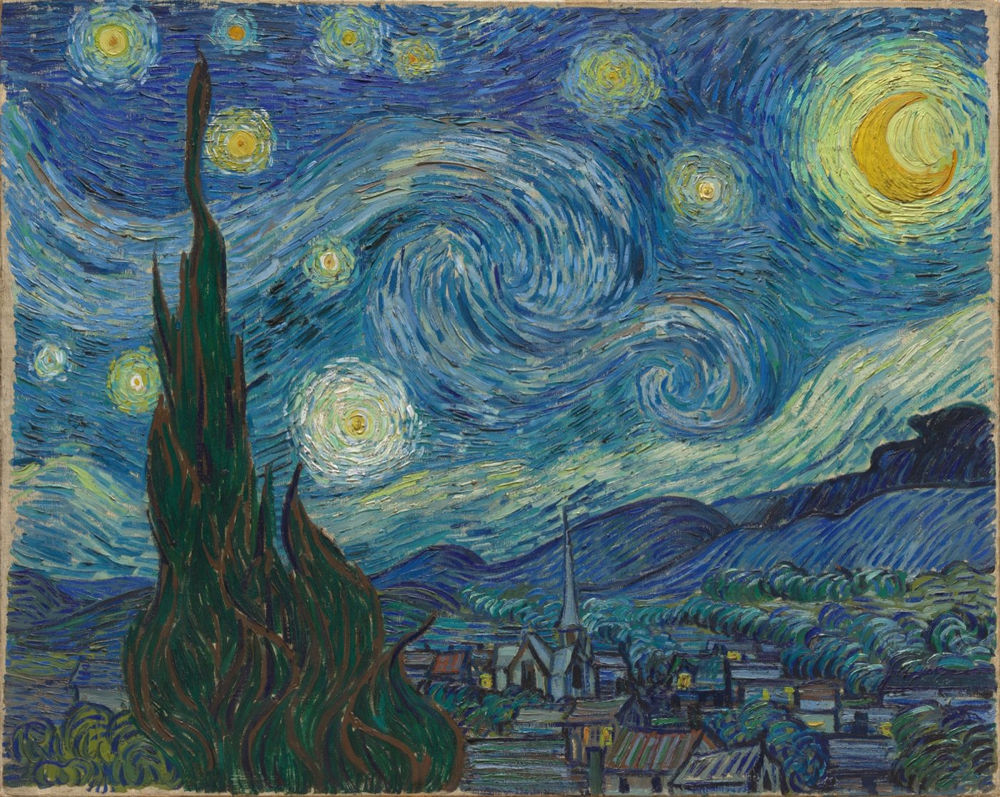

Digital Object · IS 310
The Starry Night
Vincent van Gogh, 1889. Museum of Modern Art (MoMA)

What this object represents
Van Gogh painted this scene in June 1889 while a patient at the asylum of Saint-Paul-de-Mausole near Saint-Rémy-de-Provence, France. The view is part observation and part invention: the rolling hills and the cypress tree were visible from his window, but the village in the valley below was added from memory rather than sight. The sky, painted with short, twisting strokes of blue and yellow, is often read as a record of Van Gogh's emotional state as much as it is a landscape.
This painting matters to a project about digitized visual art because it shows the gap between an artwork and its digital surrogate. A JPEG of The Starry Night can reproduce the composition and colors, but not the texture of the impasto paint, the true scale of the canvas, or the way the surface catches light in person. Studying how museums like MoMA choose to photograph, crop, and caption a painting for the web is itself a way of asking what gets preserved — and what gets lost — when a physical object becomes cultural data.